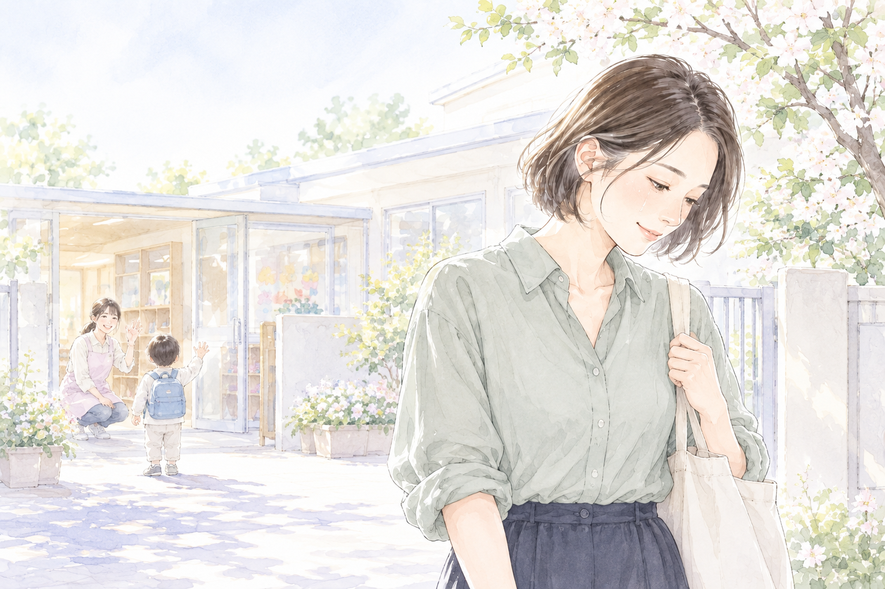
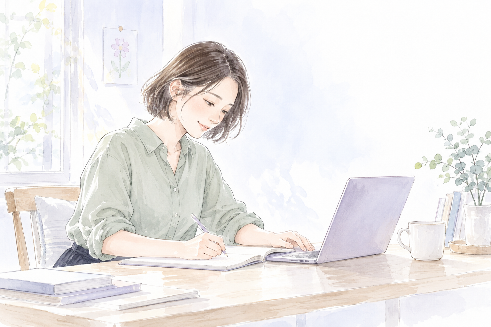
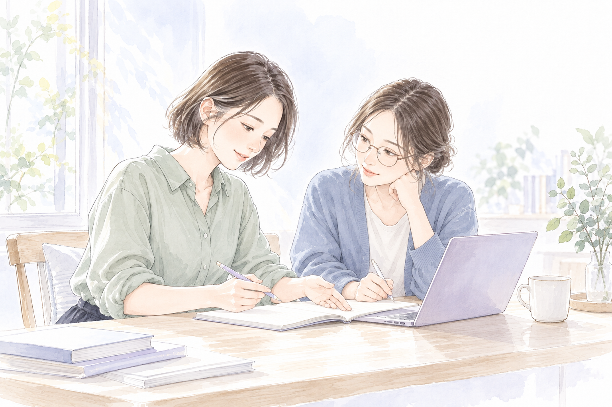

自分のことを後回しにしていた。
母にも、
好きなものを
食べてほしかった。
生活を支えるために、母は夜勤へ。
その間は、叔母が私を見てくれていた。
頑張ってくれているのは、わかっていた。
でも、寂しくて、それ以上に心配だった。
そんな中、母が倒れたこともあった。
二人で「おいしいね」って、
笑いたかった。
大人になり、
今度は私が、
母になった。

帰りの車で涙が出た。
働くことを選んだのは
自分なのに。
寂しくて、
申し訳なくて。
子どもとの時間を、
大切にしたい。
自分らしく働いて、
生活にも余裕がほしい。
どれか一つではなく、
どれも大切だった。

何かを諦めなければ
いけないのだろうか。
もっと違う選択肢が
あってもいいんじゃないか。
そのために必要なのは、
大きな収入や、
立派な肩書きだけじゃない。
「自分には、これがある。」
スキルを身につけ、経験を重ねる。
自分のピンを、一本立てるように。
知識を得て、
終わりじゃない。
身につけて、試して、経験を積む。
自分の力で、
仕事に挑戦できるように。
少しずつ。

教える側になることも。
一人の成長が、
次の誰かの可能性へ。
このスクールで、
そんな循環をつくりたい。
例えば、
こんな小さな喜びが
あったら。

帰り道、
500円のケーキを。
自分の力で得たお金で、
食べたいものを選んで帰る。
たったそれだけ。
でも、自分で身につけた
スキルで稼いだお金なら、
きっと少し特別だと思う。
少しうれしくて、
少し誇らしくて。

何でもない時間が、
少し、豊かになる。
大切にできる人生を。
何かを大切にするために、
自分の可能性まで諦めなくていい。
そんな選択肢を、
一つでも増やしたい。
このスクールは、
そんな想いから生まれました。
日常に、口笛を。
自分の中に、確かな軸を。